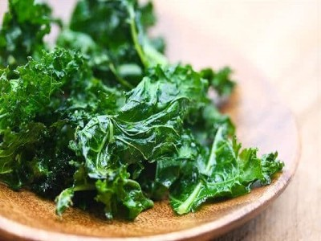

|  |
Food's name: Kale Snack▸ Ingredients:
▸ Time to prepare: 20-25 minutes ▸ Approx quantity: 1 large plate |
▸ Detailed recipe: | |
Step 1:
↪Rinse the kale and let it dry. Place the kale in a bowl, add the olive oil and
salt, and mix by hand to coat.
|
Step 2:
↪Arrange the cabbage in a baking tray on a single layer, do not overlap, put
the tray in the oven for 6-8 minutes at a temperature of 100 degrees Celsius.
Then take out the cabbage, sprinkle with salt, and season according to your preference.
|
=>That's it, the kale snack is done, and let's enjoy it.
▸ Calories and related information: